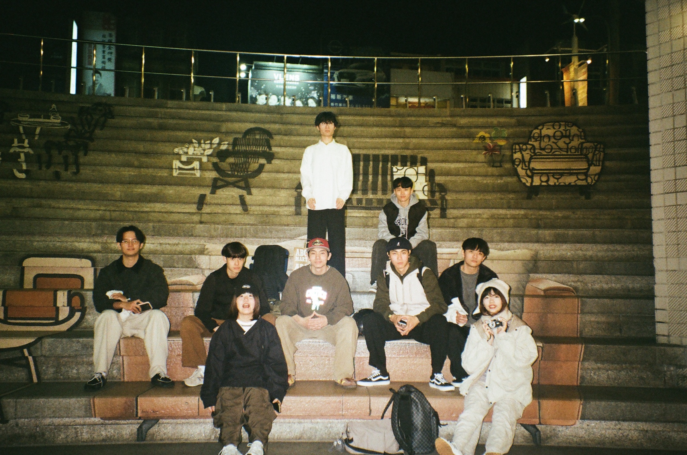
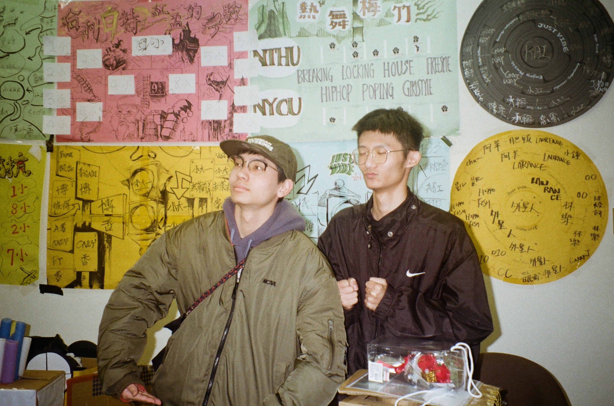
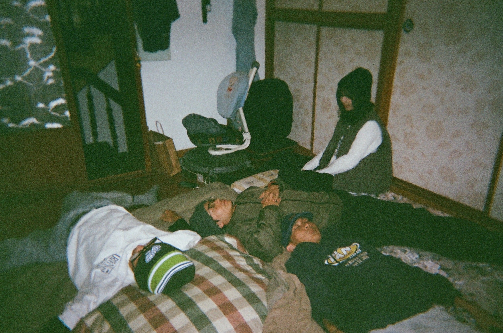
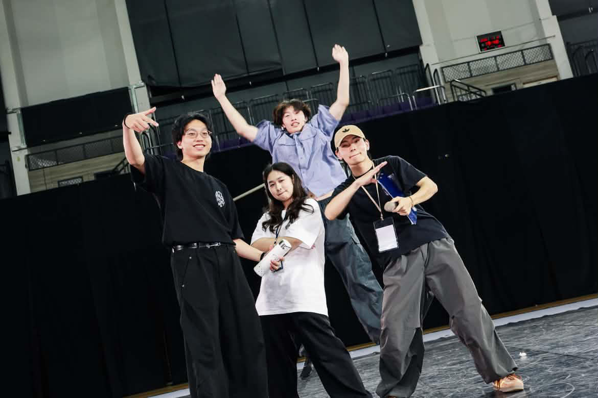

Popping 與練習
節奏、耐心與自律。
興趣太多，只好先講跳舞
因為興趣太多了，就簡單介紹幾個。從照片和自介你們應該也看得出來我很喜歡跳舞，廣泛一點來說，我很喜歡藝術，但我知道我如果當個藝術家我一定會餓死，所以我來讀外文系了。
先講跳舞吧。我想學跳舞好多年了，從我幼稚園開始，我爸放了《舞力全開 3D》之後，問了我一句：「你想學跳舞嗎？」就種下了這顆種子。年幼的我看著電影裡的迷路大師覺得真的是太帥了，於是匆匆應著：「要！」沒想到我爸只回了我：「可是這裡沒地方讓你學誒。」此事便不了了之。
我想就是在那時我有了嘻哈精神。「那你問屁啊」是大約六歲的我唯一冒出的想法，十分前衛。
之後上了小學，課後才藝班在禮拜五有街舞課，我興沖沖地跑回家和爸媽分享，換來的還是一句：「那誰要去接你？」但我並沒有因此放棄。
上了國中後有了社團課，我馬上就想選熱舞社。沒想到班導因為對於街舞的刻板印象，在告訴我們除了熱舞社之外其他都可以選之後，我又一次錯過了可以學習舞蹈的機會，只好選了吉他社，而這又是另外一個故事了，礙於篇幅關係，這次就先不在這邊和你分享了。
上了高中，成爲了 108 課綱的第一屆，因為升學考量而選了私校的我，被迫選擇了學術性社團：化學研究社。這件事也在我從未設想過的情況下讓我先一步和國立清華大學結下了一段不解之緣，也就是清大舉辦的「清華盃化學競賽」。
猶記當年因為疫情的關係，我們的考試是在線上舉辦的。信心滿滿的我在寫完考卷之後，算好時間就交了卷。為什麼我要說算好時間呢？因為提早交卷是會得到零分的。然而生命就是如此無常，不知道是因為系統時間和我電腦時間不同步，還是什麼其他因素，在競賽結束後兩個禮拜，我是社團內唯一得零分的選手，害我至少兩個禮拜不敢面對我的化學老師。
你問我這件事跟跳舞有什麼關係？沒有關係，但我就是想分享而已。
之後上了大學，在大一的時候又被學長拐去了吉他社。從鄉下來的我並不知道大學可以一次參加一個以上的社團，於是乎愚鈍的我再一次錯過了熱舞社。升上大二之後，即便又被拐去當社團幹部，我還是下足了二百萬個決心一定要加一次熱舞社才不虛此生，之後就毅然決然地加入了熱舞社，開啟了我的舞蹈生涯。




